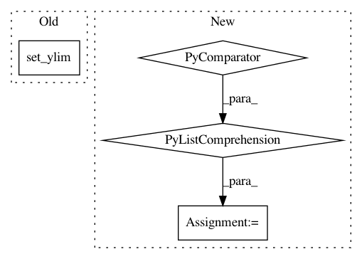

5cc17e87542da0ec1b41d3c159caeb22ac493cd2,GPy/plotting/matplot_dep/visualize.py,mocap_data_show,finalize_axes,#mocap_data_show#,472
Before Change
def finalize_axes(self):
self.axes.set_xlim(self.x_lim)
self.axes.set_ylim(self.y_lim)
self.axes.set_zlim(self.z_lim)
self.axes.auto_scale_xyz([-1., 1.], [-1., 1.], [-1., 1.])
// self.axes.set_aspect("equal")
After Change
// self.axes.set_zlim(self.z_lim)
// self.axes.auto_scale_xyz([-1., 1.], [-1., 1.], [-1., 1.])
extents = np.array([getattr(self.axes, "get_{}lim".format(dim))() for dim in "xyz"])
sz = extents[:,1] - extents[:,0]
centers = np.mean(extents, axis=1)
maxsize = max(abs(sz))
r = maxsize/2
for ctr, dim in zip(centers, "xyz"):
getattr(self.axes, "set_{}lim".format(dim))(ctr - r, ctr + r)
In pattern: SUPERPATTERN
Frequency: 3
Non-data size: 4
Instances
Project Name: SheffieldML/GPy
Commit Name: 5cc17e87542da0ec1b41d3c159caeb22ac493cd2
Time: 2015-06-28
Author: z.dai@sheffield.ac.uk
File Name: GPy/plotting/matplot_dep/visualize.py
Class Name: mocap_data_show
Method Name: finalize_axes
Project Name: nilmtk/nilmtk
Commit Name: 0ac7cecce4f147011037fcb79dfd57867b8329a8
Time: 2014-12-19
Author: jack-list@xlk.org.uk
File Name: nilmtk/metergroup.py
Class Name: MeterGroup
Method Name: plot_good_sections
Project Name: mne-tools/mne-python
Commit Name: fa91217b895957c4106d6175e27d72a48f4f05dc
Time: 2019-01-12
Author: jnu@iki.fi
File Name: mne/viz/topo.py
Class Name:
Method Name: _plot_evoked_topo